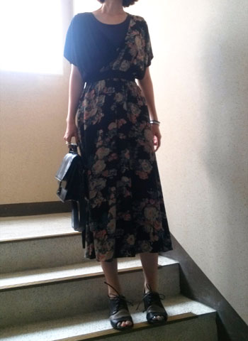
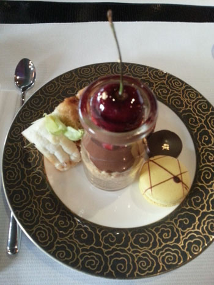
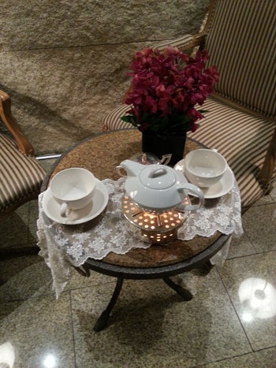

오랜만에 샤라방방(?)한 원피스를 입었습니당 :)
ASOS에서 음청 싸게 구입한건데 맘에들어용//
편하기도 무진장 편합니다 :D
원피스: ASOS / 가방: KENZO / 신발: Marsell
1.
결국 머리 자르고 염색
쵸딩때 음청 짧게 자른이후 한번도 길게 길러본적이 없는데
작년부터 딱 일년 길러봤습니당
그리고 6월말에 미용실 달려가 단발로 커트하고 염색
스아실;; 투톤염색을 해보고 싶었으나
우선 소심하게 살짝 붉은기가 도는 정도로 만족했습니다
2-3개월 지나서 깜장머리가 많이 보일때즈음
에라 모르겠다~ 하고 투톤염색을 도전해 볼까 하믄서
아직도 미련을 못 버리고 있습니당
2.
이번주 금욜 아침뱅기로 일본갑니다
캬캬 도쿄에서 약 7주간 있을 예정
마지막 방문이 2008년 여름이었으니까
이게 얼마만이야 ;ㅂ;
나름 로망이었던 여행과 일을 동시에! 가 실현되었습니다
반백수 프리랜서 모드로
노트북이랑 인터넷만 되믄 어디서든 일이 가능하니
좋네용 홋홋
그리고 거짓말처럼 출발 일주일 전에 일이 마구 쏟아졌습니다;;;
나 노는꼴 못보는게지? 다들 그렇지? 싶을정도로 ㅜㅜ
먹고사는데 일거리는 감사하니 가서 기쁜맘(?)으로 로동하겠습니다 케케
여행으로는 여름에 일본 안가겠다고 매번 다짐을 하지만
또 여름에 가네용;;;;
하지만 소닉매냐에서 맨순과 프로디지를 볼수 있는건 좋습니당//
잽싸게 티켓예매도 완료 ^^
휴가시즌인 지라
런던 회사 동료들이랑 각자 자기 휴가 어디간다
마구 자랑질을 주고받고 있었는데
그중 케이느님은 핀란드에서 리틀드래곤과 호러즈 공연을 볼거라고
호수 근처 오두막도 넘 멋져서 예약해 놨다고
마구 자랑 하더군욤
그리고 나중에 확인해 보니 그 오두막에는 전기가 안 들어 온답니다 ㅋㅋㅋ
캭캭캭
잡담 이메일 주고받으면서 막판에 저 글을 보고 단박에
......바보? 란 생각이 ㅋㅋㅋㅋㅋ
3.
해서 인터넷 면세쇼핑도 좀 하구
일본 드럭스토어 화장품 뭐가좋나 검색좀 하려했지만
출발 일주일전에 이리 정신없을 줄이야;ㅂ;
심지어 새로 사놓은 가이드북 한장도 못읽었어요;;
비행기에서 읽어야지 ㅜㅜ
우선 요즘 급 관심이 가는것은
슈에무라의 댄디코랄과 하이라이터제품 +_+
안나수이 섀도우 팔렛도 결국 살거같습니당;;;
케이스가 이뿨서/// ☞☜
4.
그 와중에 놀기도 씐나게 놀았습니다
물괴기 언니덕분에
마돈나 / 러덜리스 시사회도 댕겨오고
동대문 디올전 / 폴란드, 천년의 예술전 / 뮤지컬 시카고
신과함께 등등 부지런히 돌아 댕겼습니다 ^^
신과함께 생각보다 본격적(?)인 뮤지컬이라 놀랐어요
길 걸어가다가 광고포스터 보구 아무정보없이 티켓사서 댕겨왔는데
추천입니다.
만화 원작 아는사람도 / 모르는 사람도 재미있게 볼수있어요
이미 스토리를 다 알고있어도 주인공을 응원하게 만드는
몰입도가 있습니다 //ㅂ//
+공연후기 추가 :)
5.


일욜날 물괴기언니랑 댕겨온 리츠칼튼 서울 애프터눈티
체리뷔페라고 하네욤
덕분에 맛난거 얻어먹구 수다 음청 떨었다능//
그럼 출발 전까지 힘내서 로동!!